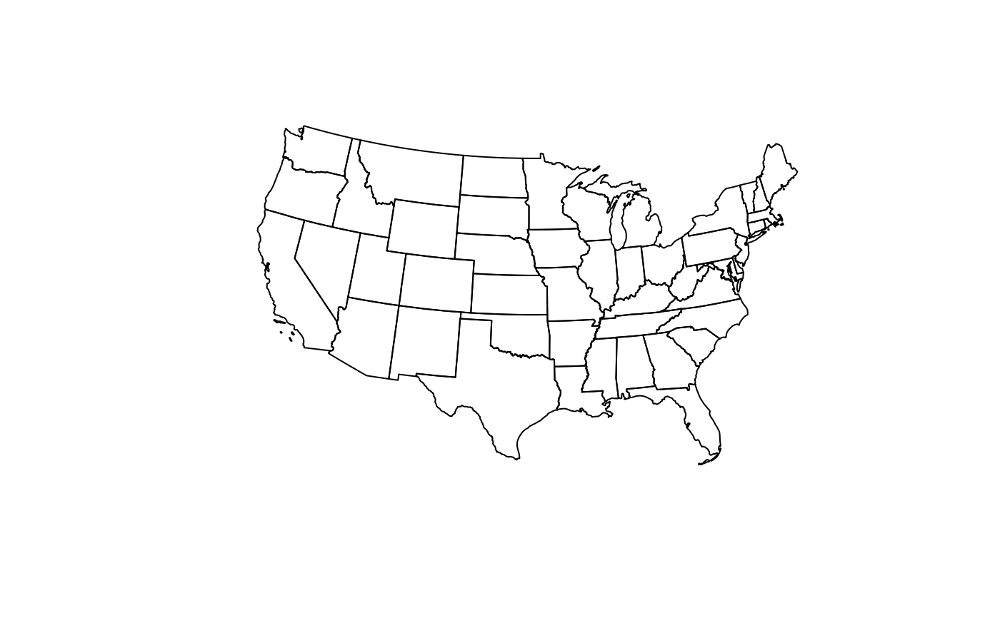
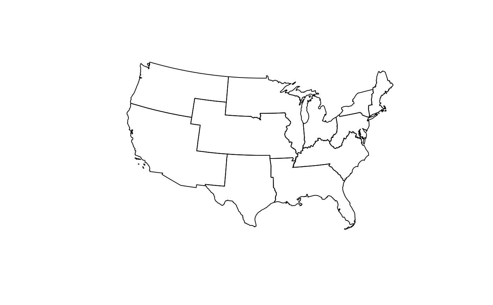

Each row represents one U.S. state (contiguous U.S. plus the District of Columbia) annotated with its UNOS region. Geometries are state polygons projected to NAD83 / Conus Albers (EPSG:5070).
Format
An sf object with one row per state and the following columns:
- Region
UNOS region label (character)
- State
State name as in the Census shapefile (character)
- geometry
sfc_MULTIPOLYGONin EPSG:5070
Source
U.S. Census Bureau Cartographic Boundary Files (2018), states (20m).
UNOS region membership table from
data-raw/UNOS regions.xlsx.
Details
The object is generated in data-raw/ by joining a table of UNOS region
membership (state → region) to Census state boundaries and projecting once to
a CONUS-appropriate projected CRS. Note this is state-level geometry; to
obtain region polygons, dissolve by Region (see Examples).
Alaska, Hawaii, and Puerto Rico are excluded to focus on CONUS + DC, matching typical analytic maps and the chosen CRS. The original lat/long CRS of the shapefile is transformed to EPSG:5070 for consistent area/length behavior.
Examples
if (requireNamespace("sf", quietly = TRUE)) {
# quick look
plot(sf::st_geometry(UNOS_regions_sf))
# build dissolved region polygons if needed
library(dplyr)
unos_regions_poly <- UNOS_regions_sf %>%
group_by(Region) %>%
summarise(geometry = sf::st_union(geometry), .groups = "drop") %>%
sf::st_make_valid()
plot(sf::st_geometry(unos_regions_poly))
}

#>
#> Attaching package: 'dplyr'
#> The following objects are masked from 'package:stats':
#>
#> filter, lag
#> The following objects are masked from 'package:base':
#>
#> intersect, setdiff, setequal, union
